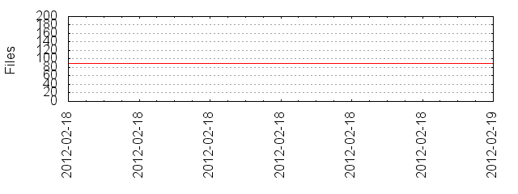

Files
- Total files
- 127
- Total lines
- 2835
- Average file size
- 14458.88 bytes

| Extension | Files (%) | Lines (%) | Lines/file |
|---|
| 3 (2.36%) | 44 (1.55%) | 14 |
| cache | 1 (0.79%) | 18 (0.63%) | 18 |
| cfg | 1 (0.79%) | 40 (1.41%) | 40 |
| css | 1 (0.79%) | 145 (5.11%) | 145 |
| dat | 10 (7.87%) | 276 (9.74%) | 27 |
| gif | 3 (2.36%) | 6 (0.21%) | 2 |
| html | 6 (4.72%) | 184 (6.49%) | 30 |
| jar | 1 (0.79%) | 934 (32.95%) | 934 |
| java | 9 (7.09%) | 843 (29.74%) | 93 |
| js | 1 (0.79%) | 324 (11.43%) | 324 |
| mp4 | 1 (0.79%) | 4335 (152.91%) | 4335 |
| plot | 10 (7.87%) | 118 (4.16%) | 11 |
| png | 58 (45.67%) | 1799 (63.46%) | 31 |
| prefs | 1 (0.79%) | 12 (0.42%) | 12 |
| properties | 1 (0.79%) | 11 (0.39%) | 11 |
| xml | 20 (15.75%) | 812 (28.64%) | 40 |